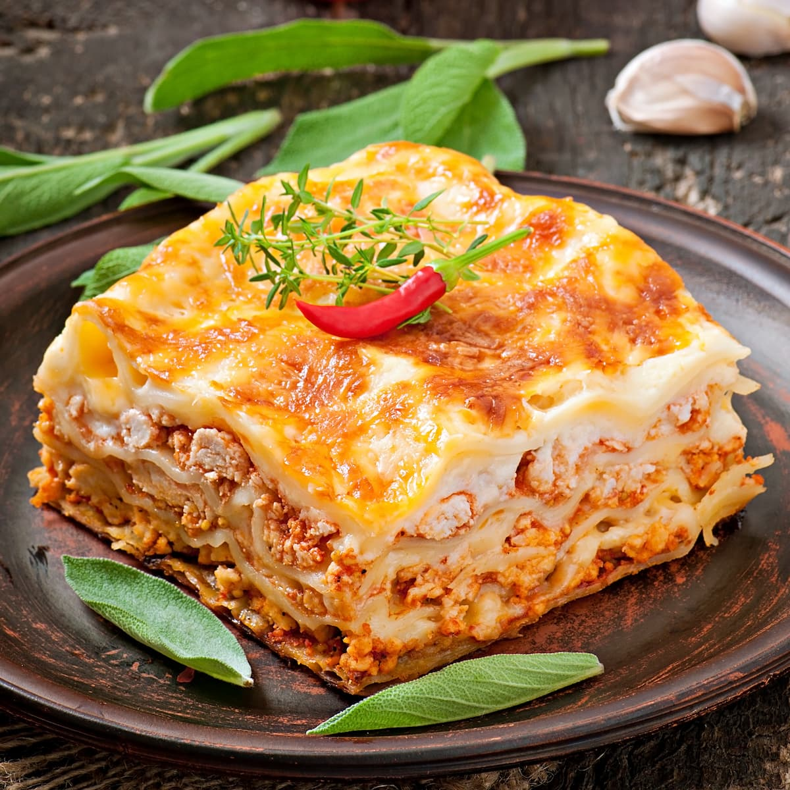

Lasagna
Home

Description
A hearty Italian-inspired lasagna made with layers of rich beef and tomato sauce, creamy ricotta, tender pasta sheets, and melted mozzarella and Parmesan cheese.
Ingredients
For the Meat Sauce
- Ground beef — 500 g
- Onion, finely chopped — 1 medium
- Garlic, minced — 3 cloves
- Crushed tomatoes — 700 g
- Tomato paste — 2 tbsp
- Olive oil — 1 tbsp
- Dried oregano — 1 tsp
- Dried basil — 1 tsp
- Salt — 1 tsp
- Black pepper — ½ tsp
For the Cheese Filling
- Ricotta cheese — 500 g
- Egg — 1 large
- Fresh parsley, chopped — 2 tbsp
For Assembly
- Lasagna sheets — 9–12 sheets
- Mozzarella cheese, shredded — 250 g
- Parmesan cheese, grated — 50 g
Steps
- Prepare the meat sauce: Heat olive oil in a large pan over medium heat. Add the chopped onion and cook for 3–4 minutes until softened.
- Add garlic and beef: Add the minced garlic and cook for 30 seconds. Add the ground beef and cook until browned, breaking it apart with a spoon.
- Add the tomatoes: Stir in the crushed tomatoes, tomato paste, oregano, basil, salt, and black pepper. Reduce the heat and simmer for 20–30 minutes, stirring occasionally.
- Prepare the cheese filling: In a bowl, combine the ricotta cheese, egg, and chopped parsley. Mix until smooth.
- Prepare the pasta: Cook the lasagna sheets according to the package instructions if using sheets that require pre-cooking. Drain and set aside.
- Assemble the lasagna: Spread a thin layer of meat sauce across the bottom of a baking dish. Add a layer of lasagna sheets, followed by ricotta mixture, meat sauce, and mozzarella.
- Repeat the layers: Continue layering until the ingredients are used, finishing with meat sauce, mozzarella, and grated Parmesan on top.
- Bake: Cover the dish with aluminum foil and bake at 190°C (375°F) for 25 minutes.
- Brown the top: Remove the foil and bake for another 15–20 minutes, or until the cheese is melted, bubbling, and golden brown.
- Rest and serve: Remove from the oven and let the lasagna rest for 10–15 minutes before slicing. Serve warm.
Recipe Tips
- Letting the lasagna rest before serving makes it easier to cut into neat portions.
- For a richer sauce, simmer the meat sauce for an additional 15–20 minutes.
- You can add sautéed mushrooms or spinach between the layers for extra vegetables.
- Freshly grated Parmesan gives the topping a better flavor and texture.